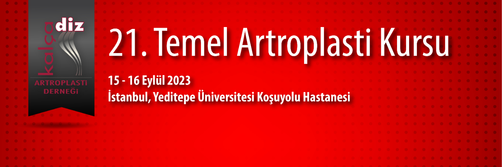

Değerli Meslektaşlarımız,
Kalça Diz Artroplasti Derneği olarak 15-16 Eylül 2023 tarihinde Yeditepe Üniversitesi Koşuyolu Hastanesi'nde 21. Temel Artroplasti Kursunu gerçekleştireceğiz. Özellikle kalça,diz artroplastisi konusunda eğitim almak isteyen genç meslektaşlarımıza yönelik temel kursta teorik bilgilerin yanısıra kuru kemikler üzerinde pratik uygulamalar ile bilgi ve becerilerin güncellenmesi amaçlanmaktadır. Artroplasti konusunda deneyimli eğiticiler ile pratik ve teorik tartışma olanağı sağlanılmış olacaktır.
İki gün sürecek olan kursumuzda; güncellenmiş, interaktif bir program ile sizleri aramızda görmekten mutlu olacağız
21. Temel Artroplasti Kursunda buluşmak üzere saygı sevgilerimizle.
Kurs Başkanı: Prof. Dr. Alpaslan Öztürk
Dernek Başkanı: Prof. Dr. Emre Toğrul
